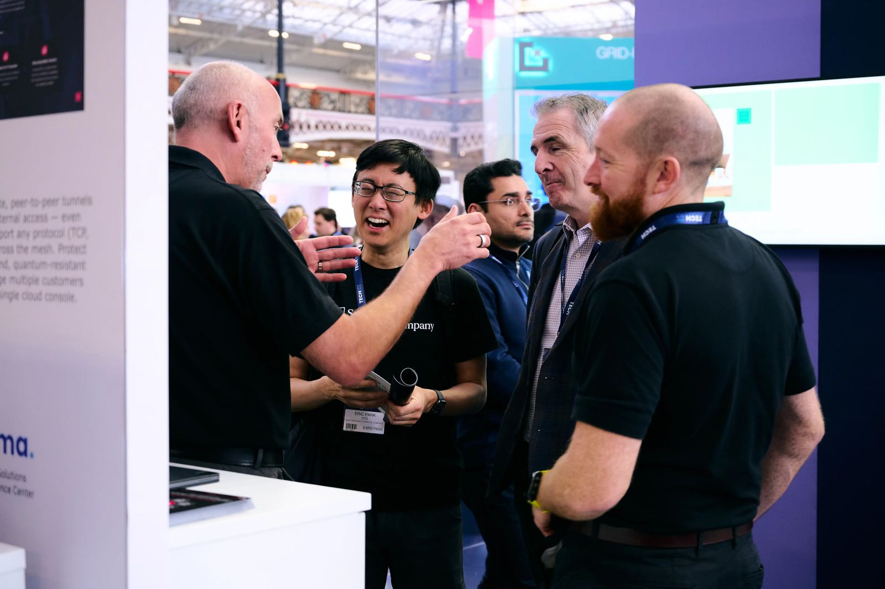

Conferences · AI
AI & Big Data Expo Global 2027 (TechEx Global)
- Dates
- –
- Venue
- Olympia London, Hammersmith Road, London W14 8UX (Grand Hall)
- Location
- London, United Kingdom
- Format
- In-person
- Category
- AI
- Industry
- AI
- Organiser
- TechEx Events Ltd
- Price
- Official FAQ: free tickets (expo floor and free stage content) and paid Gold tickets (all Gold & free tracks, VIP networking party, networking app). Numeric Gold price not stated on the FAQ. Olympia London's official event listing says 'From £599+VAT'.
- Expected attendance
- 9000+
- Official website
- https://www.ai-expo.net/global/
About
Co-located TechEx Global events include AI & Big Data, Physical AI, Cyber Security & Cloud, IoT, Intelligent Automation & Robotics, Digital Transformation, Edge Computing and Data Centre. Official FAQ and Olympia listing cite 9,000+ attendees, 200+ speakers, 150+ exhibitors. Direct fetch of ai-expo.net returned 403; facts from official FAQ/travel pages and Olympia listing, 23 Nov 2026.
Topics: AI, big data, enterprise tech.
Sources
- Official — https://www.ai-expo.net/global/
- Official — https://www.olympia.london/events/techex-global
- Official — https://www.ai-expo.net/global/visitor-faqs/
- Official — https://www.ai-expo.net/global/travel-accommodation-2/
- Official-venue — https://www.olympia.co.uk/events/techex--global
Venue
- Olympia London — Exhibition grounds · Hammersmith Road, London W14 8UX